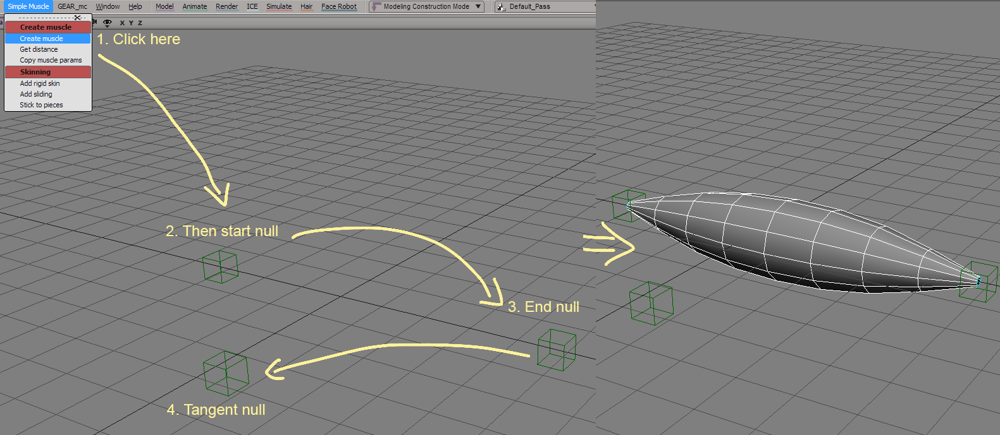
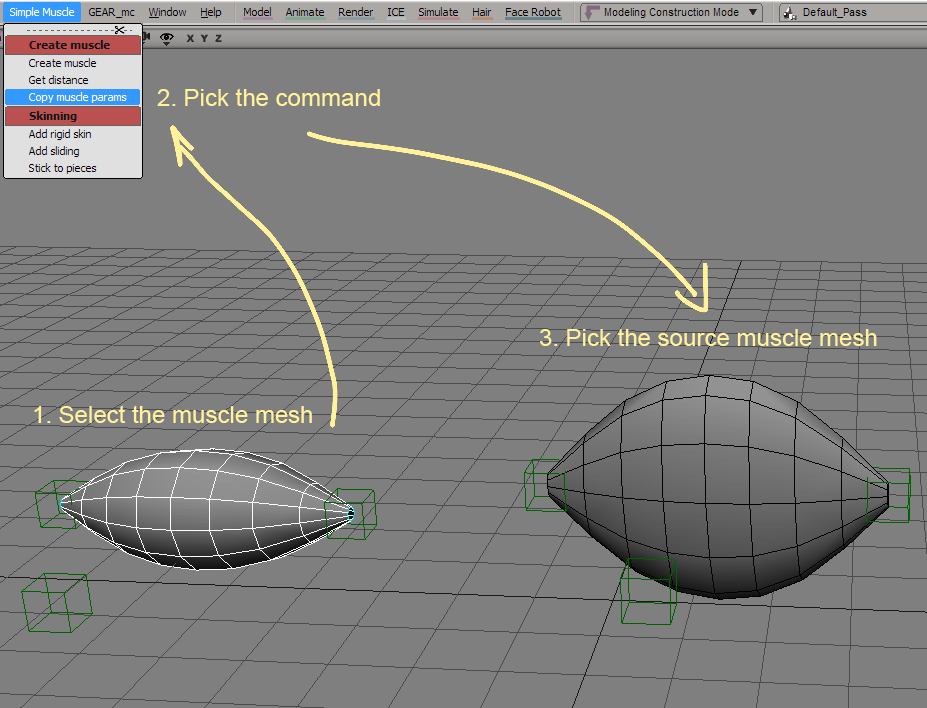
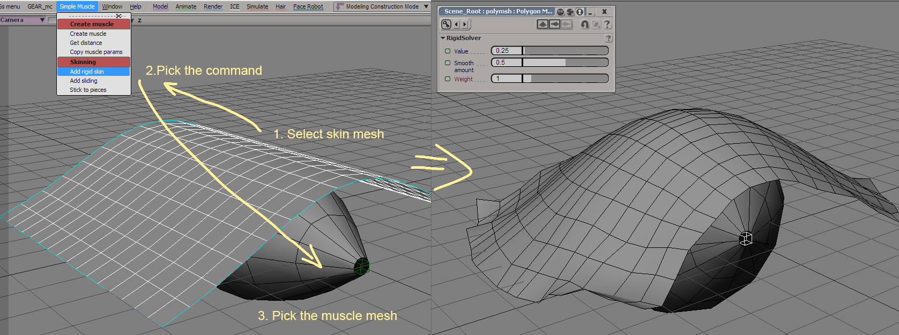
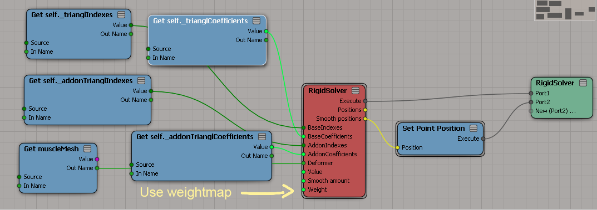
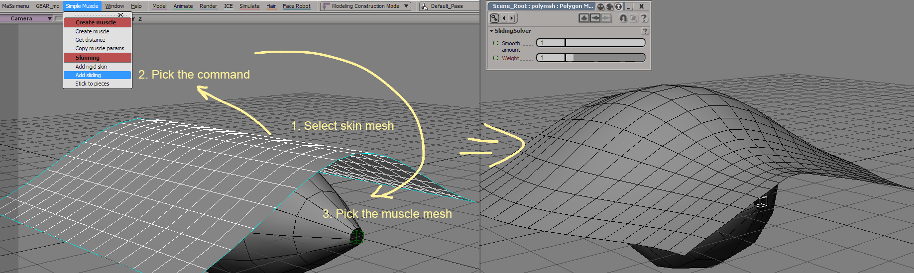

Simple muscle
Last update: 08.03.2017
Description: This is the simple ICE-based muscle system. It allows you to create muscle primitives and to skin geometry to it with sliding effect. Muscle primitives are very simple. It admit bulge/squash effect and allow spring dynamic. There are no build-in interaction between different muscles.
Download: version 1.0
How to use: Install as usual addon for Softimage. To create muscle primitive you need three nulls: start point, end point and tangent point (like for ik-chain with two bones).
To copy parameters from one muscle mesh to the other use the command "Copy muscle params".
The command "Add rigid skin" allows you to skin a geometry to the muscle mesh.
You can use weightmap for the influence of the skin effect in the ICE-tree of the skin.
The command "Add sliding" works in the similar way.
